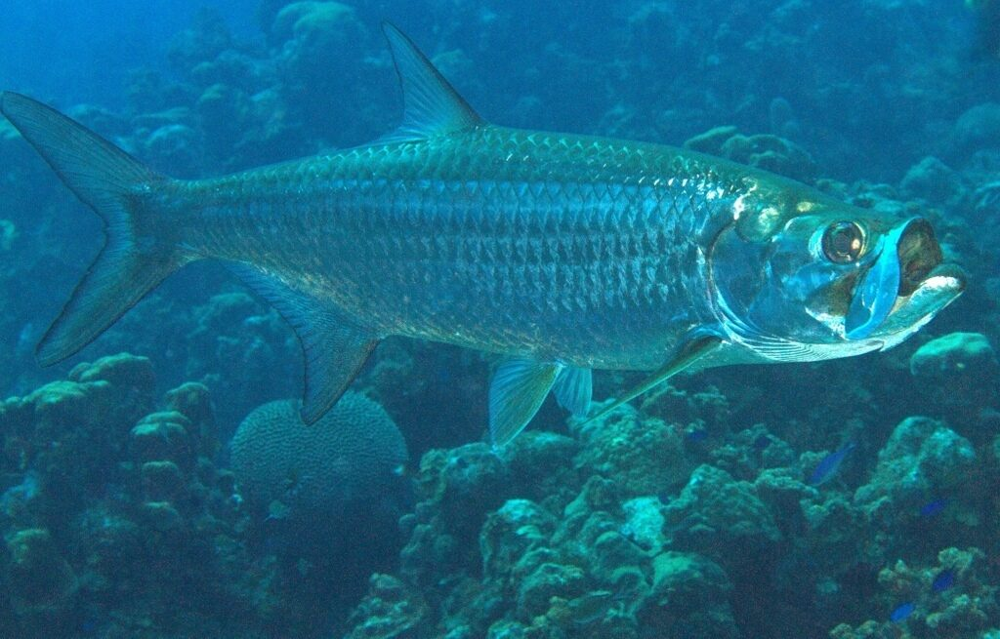

Most Fun
Tarpon
🎣 Bait & lures
Live crabs, mullet, pinfish, threadfin herring; swimbaits and soft plastics.
📍 Where to catch
Seven Mile Bridge, channels and passes, flats, nearshore Gulf/Atlantic edges; moving tide.
Recommended tackle
Rod & reel7–8 ft heavy spinning; 6000–8000 reel
Main line50–65 lb braid
Leader60–100 lb mono or fluorocarbon
Hook6/0–10/0 inline circle for natural bait
⚖️ Regulations
Hook-and-line only. Recreational harvest is limited to 1/person/year and 1/vessel with a $50 tag, solely when retained for a potential IGFA record. Tarpon over 40 in. must remain in the water during release. Spearing and snagging are prohibited.